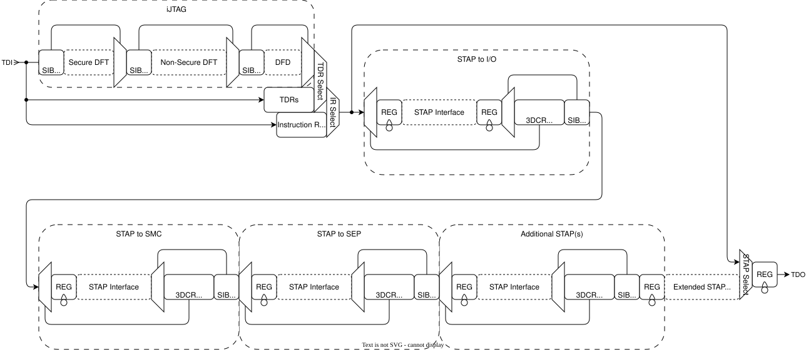

1. Architecture
The JTAG Interface Unit integrates PTAP, STAP chain, and iJTAG network into a unified debug access point.
Shown below is an abstract diagram of the JTAG scan chain.

Scan Chain Topology
The PTAP is connected to the incoming JTAG interface for the chiplet. The scan chain is organized in three major segments: the Primary TAP processes all instructions, the Secondary TAP chain provides hierarchical TAP access, and the iJTAG network enables instrument-level access to debug blocks.
STAP Chain Hierarchy
The STAP chain implements a four-level hierarchy with configurable lockup latch insertion optimized for different physical routing distances.
| Level | STAP Type | TDI_LOCKUP | SCAN_OUT_LOCKUP | Purpose |
|---|---|---|---|---|
1 |
I/O STAP |
1 |
0 |
Chiplet-to-chiplet connectivity (die boundary crossing) |
2 |
SMC Debug STAP |
0 |
0 |
On-chip connection to SMC CPU debugger TAP |
3 |
SEP Debug STAP |
0 |
0 |
On-chip connection to SEP CPU debugger TAP |
4 |
Extra STAPs [N-1:0] |
0 |
i == N-1 ? 1 : 0 |
Local debug ports (scan output lockup on last STAP only) |
The I/O STAP enables TDI lockup to handle the longer propagation delays across
die boundaries. On-chip STAPs (SMC Debug, SEP Debug) disable TDI lockup since
signal routing is local to the chiplet. The final extra STAP in the chain
enables scan output lockup when NUM_EXTRA_STAPS > 0, providing additional
output timing margin before the scan path returns to the PTAP.
Feature Control Synchronization
The lifecycle feature control signals originate in the system clock domain and must be synchronized to the TCK domain before use. The interface unit implements 64 individual 2-FF synchronizer chains, one per bit of the feature control vector. This per-bit synchronization approach breaks up the CDC timing path that would exist if the entire 64-bit vector were synchronized as a single unit.
The synchronized feature control bits determine security access levels for STAP
and SIB selection. feat_ctrl_i is enable-polarity (1 = feature enabled). Each
access point is enabled only when all of its listed enables are asserted, so
it is disabled when any one of them is deasserted:
| Access Point | Enabled When Feature Control Satisfies | Security Disable Signal |
|---|---|---|
I/O STAP |
|
|
SMC Debug STAP |
|
|
SEP Debug STAP |
|
|
Extra STAPs |
|
|
External STAP return path |
|
|
DFT Secure SIB |
|
|
DFT Non-Secure SIB |
|
|
DFD SIB |
|
|
iJTAG Network
The iJTAG network is organized into three cascaded Segment Insertion Bit (SIB) chains with differing security requirements. Each SIB gates access to a specific set of debug instruments based on the synchronized feature control signals, and requires all of the enables listed for it above.
DFT Secure Chain
The DFT Secure chain is the most restrictive of the three: it is accessible only when fuse test, SEP debug, SOC debug, and AP debug are all enabled. This chain is ported out of the DTP for connection to tooling-generated DFT logic such as MBIST controllers and scan compression logic.
DFT Non-Secure Chain
The DFT Non-Secure chain requires both SOC debug and AP debug to be enabled. This chain provides access to DFT instrumentation that does not involve security-sensitive fuse or SEP operations.
DFD Chain
The Debug Forensics Dump (DFD) chain requires AP debug to be enabled. The SIB gate itself is the least restrictive of the three; the resources reached through it are gated again inside the PTAP, where each JTAG2AXI bridge applies its own lifecycle condition. This chain grants access to:
-
SMC AXI4 system fabric via JTAG2AXI bridge
-
SMC OTP controller via AXI-Lite-to-APB bridge
-
SEP OTP controller via AXI-Lite-to-APB bridge
-
Extension port for integrator-defined debug instruments
JTAG2AXI Interfaces
The interface unit instantiates multiple JTAG2AXI bridges:
-
SMC JTAG2AXI TDRs: This set of TDRs provide a mechanism to inject AXI transactions onto the SMC AXI local interconnect.
-
SMC Fuse JTAG2AXIL TDRs: This set of TDRs provide a mechanism to interact directly with the SMC fuse controller. The JTAG2AXIL interface connects to the fuse controller CSRs through an AXI4-lite-to-APB bridge.
-
SEP Fuse JTAG2AXIL TDRs: This set of TDRs provide a mechanism to interact directly with the SEP fuse controller. The JTAG2AXIL interface connects to the fuse controller CSRs through an AXI4-lite-to-APB bridge.